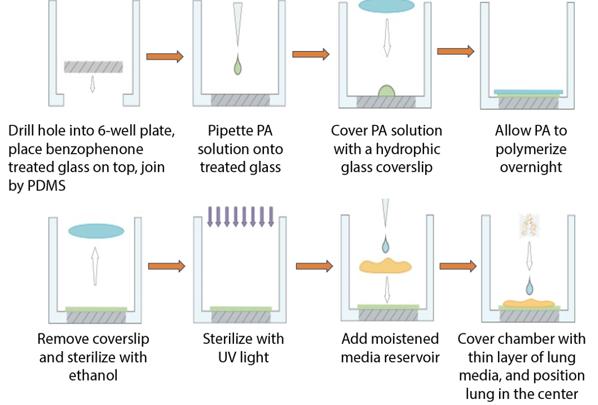

Lung Culture
Whatmann Filter
Lung media:(DMEM/F12 HEPES without phenol red)
- Add Pen/Strep such that you have 10 U/ml penicillin and 10 µg/ml streptomycin. https://journals.biologists.com/dev/article/144/23/4328/19250
- 10 mL for my 1000 mL media.
- Add 5% V/V FBS to an aliquot of HEPES media. FBS ages, so keep it frozen and do this fresh each time You can range from 1% to 10% FBS to change the speed of development and how robust the lungs are.
- Add Pen/Strep such that you have 10 U/ml penicillin and 10 µg/ml streptomycin. https://journals.biologists.com/dev/article/144/23/4328/19250
Add 2 mL Lung media to a well in a 12 well plate.
Add a Whatman Filter membrane, shiny side (hydrophillic side) down onto the media.
Place the lung onto the media with a pipette. *Don’t let the lung or filter drown under the liquid.
Keep minimally exposed to light during culture.
If imaging on an inverted scope, remove all but 200 uL media right before imaging.
Thoughts
The Whatmann Filter is the standard. There are papers that are decades old using this method. The problems are well known. It’s a 2D culture method, and you lose 3D effects. This method isn’t great for high resolution microsocpy. For an upright scope you won’t be able to use an immersion objective here without “drowning” the lung. For an inverted scope, you have to image through a lot of media and then the Whatmann Filter itself. The filter also floats around, which can make timelapse imaging difficult. However, this method is very robust and very easy, which makes it great for low magnification parallel imaging.
Open Questions
Whatmann Filter’s come in many pore sizes. What is the best pore size for imaging?
Sherry Chamber
Day 1: Coverslip Functionalization & Assembly
NaOH Treatment
- Add 150 mL 0.1 M NaOH to a beaker.
- Add coverslips one by one, ensuring separation. Incubate 30 min RT.
- Prepare three beakers with MQ water.
- Decant NaOH to waste.
- Rinse beaker with coverslips briefly with MQ water.
- Transfer each coverslip through the three MQ water beakers using forceps.
- Wick excess water. Air dry coverslips against a Petri dish wall for at least 1 hour.
APTMS Treatment
Perform in chemical fume hood.
- Fresh 2% APTMS solution: Mix 1 mL APTMS with 49 mL acetone.
- Pour APTMS solution into a clean glass vessel.
- Transfer dry coverslips into APTMS solution. Incubate 30 min RT in fume hood.
- Prepare three beakers with fresh acetone.
- Decant APTMS solution to organic waste.
- Transfer coverslips through the three acetone beakers.
- Wick excess acetone. Air dry coverslips in fume hood for at least 10 min.
- Dispose of used acetone to organic waste.
Glutaraldehyde Treatment
Perform in chemical fume hood.
- Fresh 0.5% Glutaraldehyde solution: Example for 25% stock, mix 1 mL with 49 mL 1X PBS. Adjust for your stock.
- Pour glutaraldehyde solution into a clean glass vessel.
- Transfer dry APTMS-treated coverslips into glutaraldehyde solution. Incubate 30 min RT in fume hood.
- Prepare three beakers with MQ water.
- Decant glutaraldehyde solution to chemical waste per institutional guidelines.
- Transfer coverslips through the three MQ water beakers.
- Wick excess water. Air dry coverslips on a plate, preferably overnight.
- Store dry functionalized coverslips in a sealed, covered Petri dish in a desiccator.
Attach Coverslips to 6-Well Plates
- Drill holes in bottoms of 6-well plate wells.
- Apply PDMS adhesive around hole underside.
- Affix a functionalized coverslip, treated side up, onto adhesive.
- Cure PDMS.
Day 2: PA Gel Coating
Prepare PA Gel Solution ~1 kPa
- Combine in order: 854.5 µL MQ Water, 125 µL 40% Acrylamide, 15 µL 2% Bis-acrylamide, 5 µL 10% APS.
- Mix gently.
- Immediately before casting add 0.5 µL neat TEMED.
- Mix well again.
- Optional: Degas by centrifuging at high speed, for example greater than 10,000 x g, for 3 min.
Prepare Top Coverslips
- For each PA gel well, get a plain glass coverslip.
- Coat one side of plain coverslips with Gel Slick Solution per manufacturer. Let dry.
- Optional: Mark non-coated side of Gel Slick-treated coverslips.
Cast PA Gel
- Pipette 36 µL PA gel solution to center of each functionalized glass bottom. Avoid bubbles.
- Gently place a Gel Slick-coated coverslip, slick side down, onto PA solution.
- Allow top coverslip to settle. Adjust position if needed; do not press down.
- Cure PA gel at RT for 20-30 min.
- Add 1-2 mL 1X PBS to each well to cover gel sandwich.
- Store plate at 4°C overnight.
Day 3
- Remove plate from 4°C.
- Using forceps, gently lift Gel Slick-coated top coverslip from each PA gel.Sterilize PA Gels
- Aspirate PBS.
- Add 100% ethanol to cover gel; incubate 5-10 min.
- Aspirate ethanol.
- Wash each gel twice with sterile 1X PBS for 5 min each.
- Remove most PBS, leaving gel moist.
- Expose gels to UV light for 10 min. Adjust time based on UV source.
Thoughts
Sherry Chambers give terrific imaging, and give a little bit of room for the lung to grow in three dimensions. However they are fairly intensive to make, so throughput is very low.
Open Questions
How does the development (particularly the 3D development) change from Whatmann Filter culture? Is there an easier way to mass produce these chambers?